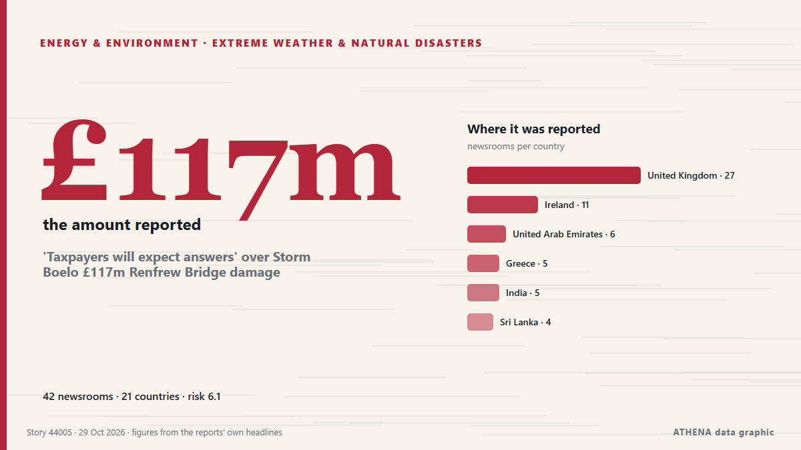

'Taxpayers will expect answers' over Storm Boelo £117m Renfrew Bridge damage

Storm Boelo is forecast to bring severe wind and rain to the south, southwest and north today, with Status Orange weather alerts in place for a number of counties. von RTÉ News
Unabhängig gemeldet von 42 Medien in 21 Ländern seit dem 20. Okt., zuerst von Arabian Business; die Berichterstattung flaut ab. ATHENA stuft das Risiko als hoch ein (6.1/10), vor allem wegen der Schwere des beschriebenen Schadens und seiner geografischen und sektoralen Reichweite. Die Konfidenz liegt bei 87 % (hoch): 42 Medien bestätigen es unabhängig, bei einer mittleren Verlässlichkeit der Quellen von 71 %. Wer berichtete: 12 Medien in Vereinigtes Königreich · United Kingdom, 5 Medien in Vereinigte Arabische Emirate · United Arab Emirates, 4 Medien in Irland · Ireland. Die Berichterstattung lief von 20. Okt. bis 28. Okt., über 193 Stunden.
Warum es wichtig ist: Entwicklungen bei Energie und Rohstoffen beeinflussen Kraftstoff- und Strompreise, Versorgungssicherheit und Klimaziele.
Was sich geändert hat: 30 neue Berichte von 23 Redaktionen in den 24 Stunden bis 29. Okt..
Erste Schlagzeile: Five counties under Orange warning during Storm Boelo
Schlagzeilen werden auf Englisch angezeigt, wie veröffentlicht.
Auf einen Blick
Ausgewählt, bewertet und geschrieben nach der veröffentlichten Methodik von ATHENA. Kein Redakteur greift in einzelne Ereignisse ein. So entsteht ATHENA ›
| 20 Oct 08:26 UTC | 1 |
|---|---|
| 20 Oct 20:26 UTC | 1 |
| 21 Oct 08:26 UTC | 0 |
| 21 Oct 20:26 UTC | 0 |
| 22 Oct 08:26 UTC | 1 |
| 22 Oct 20:26 UTC | 0 |
| 23 Oct 08:26 UTC | 0 |
| 23 Oct 20:26 UTC | 3 |
| 24 Oct 08:26 UTC | 1 |
| 24 Oct 20:26 UTC | 0 |
| 25 Oct 08:26 UTC | 3 |
| 25 Oct 20:26 UTC | 1 |
| 26 Oct 08:26 UTC | 5 |
| 26 Oct 20:26 UTC | 9 |
| 27 Oct 08:26 UTC | 10 |
| 27 Oct 20:26 UTC | 7 |
| 28 Oct 08:26 UTC | 18 |
| 28 Oct 20:26 UTC | 11 |
| 29 Oct 08:26 UTC | 5 |
| 28 Oct 16:42 UTC | 6.0 |
|---|---|
| 30 Oct 09:36 UTC | 6.1 |
| 30 Oct 09:36 UTC | 6.1 |
Warum diese Zahlen
Bedeutung
Risiko
Konfidenz
Die Berichterstattung – wer berichtete, und wann
Schlagzeile wie veröffentlicht · öffnet das Original- Arabian Business · Vereinigte Arabische Emirate · United Arab EmiratesUAE weather: Rain and colder temperatures forecast this week
- Arabian Business · Vereinigte Arabische Emirate · United Arab EmiratesUAE weather: Forecasters predict where rain will fall hardest this week amid thunderstorm warning
- Arabian Business · Vereinigte Arabische Emirate · United Arab EmiratesDubai prepares for UAE rain forecast with 675 emergency staff and 1,100 machines
- RTÉ News · Irland · IrelandFive counties under Orange warning during Storm Boelo
- Arabian Business · Vereinigte Arabische Emirate · United Arab EmiratesUAE launch new platform as it targets $65bn in foreign investment by 2031
- The Irish News (Belfast) · Vereinigtes Königreich · United KingdomStorm Boelo: Thousands of homes without power and traffic disruption as high winds batter Northern Ireland
- Keep Talking Greece · Griechenland · GreeceGreece Weather Warning: Heavy rainfalls and thunderstorms
- IOL · Südafrika · South AfricaDozens of flights cancelled at Amsterdam airport due to strong winds
- The Local Sweden · Schweden · SwedenToday in Sweden: A roundup of the latest news on Monday
- The Irish News (Belfast) · Vereinigtes Königreich · United KingdomNew Northern Ireland weather warnings issued for high winds
- Evening Standard (London) · Vereinigtes Königreich · United KingdomEfforts continue to restore power after Storm Boelo amid further wind warnings
- Nation.Cymru · Vereinigtes Königreich · United KingdomThree flood warnings in Wales as further rain and strong winds approach
- The Portugal News · PortugalAlgarve wind farm shows how to protect migrating birds
- Newsroom Panama · PanamaHigh Waves and Winds in the Panamanian Pacific Until October 31. A Warning Issued By SINAPROC.
- The Herald (Scotland) · Vereinigtes Königreich · United KingdomStorm-hit Scots demand answers as flood damage sparks 'serious questions'
- TheJournal.ie · Irland · Ireland'It wasn't a voluntary emigration': Patsy O'Sullivan was part of a generation who fled Ireland
- Manchester Evening News · Vereinigtes Königreich · United KingdomThe 10 'act now' flood warnings still in force across the North West tonight
- Free Malaysia Today · MalaysiaMalaysia’s Manjari makes her numbers count in Ireland
- Malay Mail · MalaysiaHeavy rain, high tides put Pulau Perhentian villagers on alert as monsoon season begins
- to vima · Griechenland · GreeceBad Weather to Persist in Greece Through Wednesday
- Mainichi (English) · JapanSiemens to set up regional base for wind turbine maintenance in Hokkaido
- Daily Mirror · Sri LankaSevere lightning advisory issued for Ampara and Batticaloa
- The Herald (Scotland) · Vereinigtes Königreich · United KingdomRail route disrupted after high winds hit vital bridge
- The Herald (Scotland) · Vereinigtes Königreich · United KingdomHigh winds bring disruption to road, rail and ferries as flooding risk rises
- RTÉ News · Irland · IrelandNo single answer to geo-blocking TV content in NI - Ofcom
- Arabian Business · Vereinigte Arabische Emirate · United Arab EmiratesUAE weather: Rain forecast until Friday
- The Hindu · Indien · IndiaRivers in north Andhra under watch amid cyclone-triggered rains
- OC Media · Georgien · GeorgiaInstallation of six wind turbines completed at Vento Energy’s 43.2 MW Breti Wind Power Project
- The Herald (Scotland) · Vereinigtes Königreich · United KingdomHistoric golf club submerged after Storm Boelo as damage 'difficult to imagine'
- Phys.org · Vereinigtes Königreich · United KingdomScientists reveal the staggering number of bat deaths at wind turbines
- The Rio Times · Brasilien · BrazilPeru Red Rain Alert as River Hits 30 Homes
- Belfast Telegraph · Vereinigtes Königreich · United KingdomNature recovery plan launched amid Northern Ireland biodiversity decline
- The Irish News (Belfast) · Vereinigtes Königreich · United KingdomNature recovery plan launched amid Northern Ireland biodiversity decline
- The Island · Sri LankaSeveral spells of showers will occur in the Western, Sabaragamuwa provinces and in Kandy, Nuwara-Eliya, Galle and Matara districts
- China Daily — page reader · ChinaEU's marine biodiversity plans face challenges
- Cyprus Mail · Zypern · CyprusThunderstorms, hail and gale force winds batter Cyprus as low barometric engulfs island
- Daily Mirror · Sri LankaLightning alert for Eastern areas
- Irish Independent · Irland · IrelandBank of Ireland raises income forecast as lending grows by €3.6bn
- Cyprus Mail · Zypern · CyprusStorms cause power outages in Larnaca and Limassol
- Hindustan Times · Indien · IndiaThree killed by storm in southern India